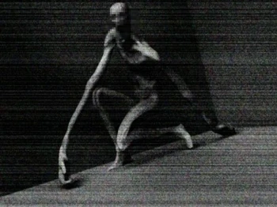

SCP-096:

informacion sobre scp-096:
SCP-096: Es una criatura humanoide que mide aproximadamente 2,38 metros de altura. El sujeto muestra muy poca masa muscular, el análisis preliminar de la masa corporal sugiere de desnutrición leve. Los brazos están totalmente fuera de proporción con el resto del cuerpo del sujeto, con una longitud aproximada de 1,5 metros cada una. La piel, en su mayoría, carece de pigmentación, y no hay indicios de ningún vello corporal. Suele ser dócil, pero cuando se le mira directamente a la cara (o también a una foto de su rostro), empezará a llorar por un periodo de tiempo entre 1 y 2 minutos. Terminado esto, se levantará y comenzará a correr a quien le observó el rostro para matarlo. Una vez esté en ese estado, será imposible pararlo.